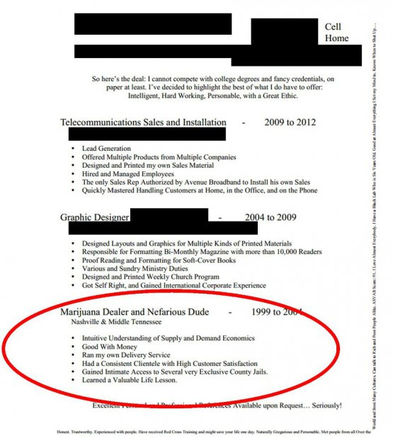
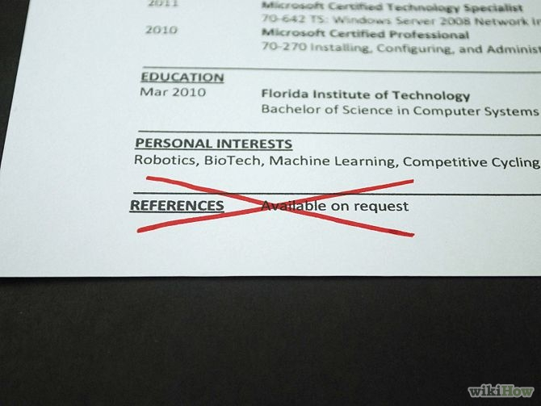
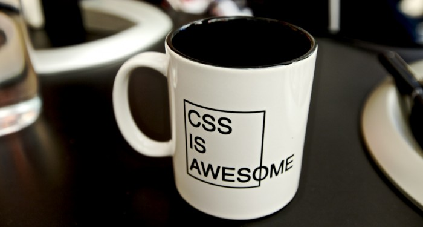
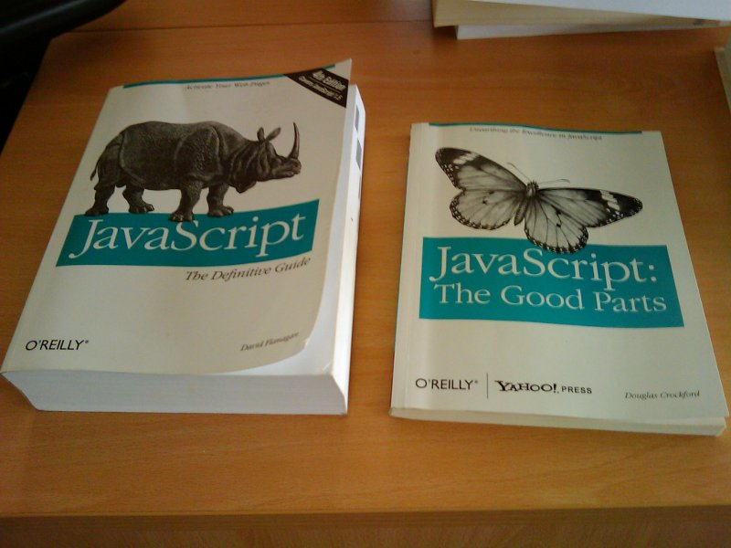

Front-End
Interview
http://goo.gl/89K2FI
www.thatJSDude.com / @mdkhan005
(youtube.com/user/khanLearning)
Web Developer

Employer Rules
Basic Rules
Always worth more to other emoployer
This is like romantic relation
-
Unless, you got another offer
- HR works for the company not for you
- All employees are NOT treated equally
- Get things in written
- The grand excuse: Corporate Policy
Always worth more to other emoployer
This is like romantic relation
Unless, you got another offer
Interview Process
Make Sure
-
Why are you looking for a job?
-
Set your goal
-
Set timeline
-
living cost in new city
1. Prepare
You are selling your self
-
Prepare Resume
-
Update Linkedin Profile
-
Hide it from your boss
-
Polish your website/blog
-
Put cool stuff on github
2. Apply
-
dice, indeed, moster is polluted
-
linkedin/jobs is also poluted
-
career.stackoverflow.com/jobs
-
Groups/ meetups/ Conferences
-
Weekly/ Javascript weekly/ jobety weekly
-
Referral
3. Recruiters
-
They are smart
-
They are trying to help you
-
They are paid by their agent
-
They are NOT your manager
-
Use them wisely
4. Phone interview
-
Ask for job description
-
Prepare for it
-
Get a quite place
-
Live coding (collabedit)
-
Check your headphone
-
Skype interview (test headphone)
5. On site Interview
-
Multiple rounds
-
Check dress code
-
Prepare seriously
-
White board coding
-
HR related questions
6. Before Accepting Offer
-
Negotiate
-
Bonus, share, days off, insurance, 401k
-
Switch job with big margin
-
I dont like counter offer
-
Give enough time to current job
-
Be nice and grateful
7. Prepare for the new job
-
Know your responsibility
-
Do your homework
-
Learn framework
-
Relocate
-
Create impression in 1st week
Resume
Resume
-
1/2 pages
-
I hate objective
-
Summary of technologies
-
Don't write stories/ paragraphs
-
Use bullet points
-
achievement, not responsibility
-
Action Verb + Task + Result
-
5 sec test
Don't Be too honest
No Reference
Cover letter
HTML
HTML
doctype
html5
span vs div
inline vs block
svg vs canvas
html question answers
Html
data-* attribute
standard vs quirk mode
semantic tag
- serve html in multiple language
html question answers
CSS
CSS - beginner
-
px, em, %
-
visibility hidden vs display none
-
absolute, relative, fixed, static position
-
inline, block, inline-block
-
float, clear
-
pseudo classes
-
align center-center p in a div
CSS Questions Answer
CSS - intermediate
-
Responsive
-
pre-processor
-
framework
-
media query
-
Specificity
-
download conditional css files
CSS Questions Answer


JavaScript
Basics
-
null vs undefined
-
== vs ===
-
class
-
Ajax
-
bind, call, apply
-
this
JS questions
Algorithm
-
fibonacci
-
reverse string
-
remove duplicate from array
-
merge sorted array
-
palindrome
-
all permutation of a string
JS: algorithm
String Reverse
function reverse(str){
var rtnStr = '';
for(var i = str.length-1; i>=0;i--){
rtnStr +=str[i];
}
return rtnStr;
}
> reverse('you are a nice dude');
= "edud ecin a era uoy"
recursive
function reverse (str) {
if (str === "") {
return "";
} else {
return reverse(str.substr(1)) + str.charAt(0);
}
}
use build in method
function reverse(str){
return str.split('').reverse().join('');
}
Extension of native String
String.prototype.reverse = function (){
return this.split('').reverse().join('');
}
> 'js dude'.reverse();
= "edud sj"
JavaScript - intermediate
-
prototype chain
-
closure
-
pass by value or ref
-
jquery like chaining
-
memoization
JS - DOM
-
window vs document
-
Add a class to an element
-
innerHTML vs CreateElement
-
reflow vs repaint
-
Event bubble
-
get all text in a web page
DOM related Questions Answer
Framework
-
What you like about Angular
-
What you dont like
-
How will you select a framework
-
Pass Event between scope
-
Service vs Provide vs Factory
-
What do you think about performance
HR related
HR related
-
Tell me about yourself
-
What is your weakness
-
How you resolve conflict
-
Introduce New Technology
-
Why change your current job
-
Expected Salary?
Resources

http://goo.gl/89K2FI
www.thatJSdude.com / @mdkhan005
(youtube.com/user/khanLearning)
Thank you